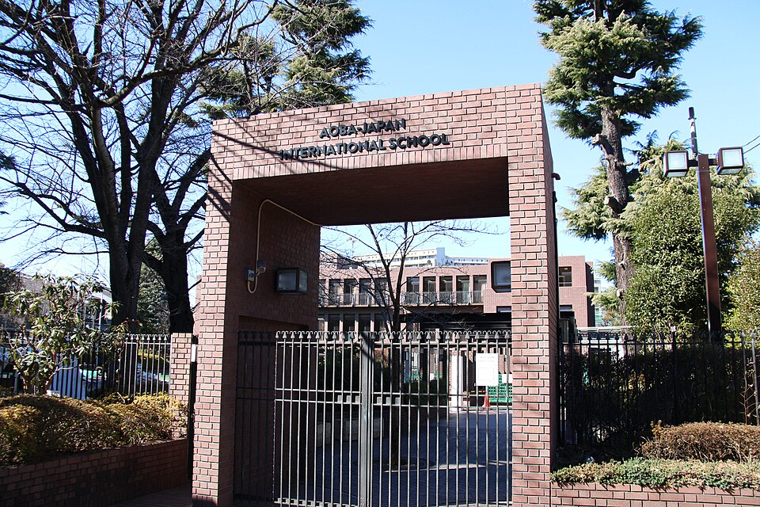

아오바 재팬 인터내셔널 스쿨(분쿄 캠퍼스) · 사진: Aobajapaninternationalschool / Wikimedia Commons, CC BY-SA 4.0
아오바 재팬 인터내셔널 스쿨(Aoba-Japan International School) — 고등학교에서 캠퍼스가 바뀌고, 길이 둘로 갈립니다
1. 어떤 학교인가
· 설립 — 1976년 도쿄 메구로 지역에서 아오바 인터내셔널 스쿨로 시작한 것으로 알려져 있습니다.
· 캠퍼스 — 현재 메구로구(아오바다이)·네리마구(히카리가오카)·분쿄구 세 곳으로 안내됩니다. 히카리가오카로는 2012년에 옮긴 것으로 알려져 있습니다.
· 학년 — 유아 과정부터 G12까지로 소개됩니다.
· 교육과정 — IB 월드스쿨로, PYP(초등)·MYP(중등)·DP(고등)를 갖춘 것으로 안내됩니다. IB 월드스쿨 인증은 2015년으로 알려져 있습니다.
· 고등 과정 — 마지막 2년에 IB 디플로마와 학교 자체 과정인 GLD(Global Leadership Diploma) 두 갈래가 안내됩니다.
※ 학비·정원·재학생 수·합격률처럼 해마다 바뀌는 수치는 이 글에서 다루지 않습니다. 캠퍼스별로 받는 학년 범위와 개설 과정도 연도에 따라 안내가 달라질 수 있으니 올해 요강을 학교에 직접 확인하세요.
2. 핵심 ① — 학년이 올라가면 다니는 동네가 바뀝니다
한 학교인데 건물이 세 곳에 나뉘어 있습니다. 안내되는 구성은 대략 이렇습니다.
· 메구로구 아오바다이 — 유아 과정
· 네리마구 히카리가오카 — 유치원부터 중학교 구간(대략 G9)까지
· 분쿄구 — 고등학교 구간(대략 G10~G12). 야마노테선 스가모·고마고메역 쪽 생활권으로 안내됩니다.
여기서 한국 가정이 자주 놓치는 지점이 있습니다. 주재원 임차 계약은 보통 2~3년 단위인데, 학교는 그 사이에 아이를 다른 구로 보냅니다. 히카리가오카는 도쿄 북서쪽이고 분쿄 캠퍼스는 야마노테선 안쪽이라 생활권이 서로 다릅니다. 초등 아이 기준으로 집을 정하셨다가, 아이가 G10이 되는 해에 통학 시간이 완전히 다시 계산되는 일이 생깁니다.
그래서 집을 보시기 전에 종이에 한 줄만 적어 보세요. "우리 아이가 G10이 되는 해는 몇 년도인가." 그 해가 지금 계약 기간 안에 들어오면, 처음부터 두 캠퍼스 사이를 기준으로 집을 보시는 편이 낫습니다.
비슷한 구조를 다른 도시에서도 보실 수 있습니다. 호치민의 ISHCMC는 나이에 따라 캠퍼스가 갈리고, 홍콩의 HKIS는 두 캠퍼스를 운영합니다. 다만 아오바는 고등 구간이 통째로 다른 구로 넘어간다는 점에서 통학 영향이 더 큽니다.
3. 핵심 ② — 고등 2년, 길이 둘입니다
이 학교를 다른 도쿄 학교와 가장 크게 가르는 부분입니다. 고등학교 마지막 2년에 두 가지 길이 안내됩니다.
| 확인할 것 | IB 디플로마(DP) | GLD (학교 자체 과정) |
|---|---|---|
| 받는 것 | IB 디플로마(국제 공통 자격) | 아오바 고등학교 졸업장 |
| 시간표를 짜는 방식 | 여섯 영역이 틀로 주어진다 | 학생마다 다르게 설계한다 |
| 수업 형태 | 대면 수업 중심 | 대면 또는 온라인으로 안내 |
| 옆에 붙는 사람 | 과목 교사 + 진학 카운슬러 | 리더십 코치가 2년간 배정 |
| 힘든 지점 | 기한이 몰린다(소논문·내부 평가) | 스스로 정할 것이 많다 |
| 미리 물어야 할 것 | 지원할 대학·국가가 어떤 서류를 요구하는가 — 학교 진학 카운슬러와 대학 요강을 함께 확인 | |
※ 위 표는 학교가 공개한 안내를 바탕으로 구조만 비교한 것입니다. 개설 과정과 운영 방식은 연도에 따라 바뀔 수 있으니 반드시 그해 요강을 확인하세요.
가장 흔한 오해부터 풀고 가겠습니다. "IB가 힘들면 GLD로 가면 된다"고 생각하시는 분이 많은데, 정확하지 않습니다. GLD는 덜 하는 길이 아니라 다르게 채우는 길입니다. IB 디플로마는 무엇을 언제 해야 하는지가 틀로 주어지는 대신 기한이 몰려서 힘들고, GLD는 그 틀을 스스로 세워야 합니다. 계획을 세우고 지키는 습관이 아직 안 잡힌 아이에게 GLD는 오히려 더 어려울 수 있습니다.
판단은 G9 끝나기 전에 시작하셔야 합니다. 이 학교는 중등 구간이 MYP로 운영되는 것으로 안내되는데, MYP에서 기준표 채점과 긴 과제 관리가 되는 아이는 IB 디플로마 쪽이 무리가 없습니다. 반대로 MYP 내내 기한을 놓쳤다면 그 습관은 GLD에서도 그대로 따라옵니다. → IB DP 점수 구조 · 형성평가·총괄평가
4. 한국(주재원) 학생·학부모가 겪는 어려움
· 생활 언어와 학습 언어가 다릅니다. 도쿄에 살면 아이의 일본어가 빨리 늡니다. 그런데 학교 수업과 평가는 영어로 진행됩니다. 두 언어가 동시에 들어오면서 교과 영어가 가장 늦게 자리를 잡습니다. → EAL · 리딩 레벨 읽는 법
· MYP의 채점 기준이 낯섭니다. 점수가 숫자 하나가 아니라 항목별 기준표로 나옵니다. 어디서 깎였는지 읽는 법을 모르면 "열심히 했는데 왜 안 오르지"가 반복됩니다. → 성적표 읽는 법
· 고등 진입 시점에 결정이 몰립니다. 캠퍼스 이동, IB냐 GLD냐, 과목 선택이 같은 해에 겹칩니다. → 진학 카운슬러 활용법
· 수학은 용어에서 막힙니다. 한국에서 이미 배운 단원인데 알지브라·지오메트리 용어가 영어라 손을 못 댑니다. 답만 적으면 과정 점수를 받지 못합니다. → 알지브라 공부법
· 온라인 선택지를 과소평가합니다. GLD의 온라인 형태는 편해 보이지만, 시간을 스스로 관리해야 해서 아이에 따라 결과 차이가 큽니다. → 학습 플랫폼·시간표 읽는 법
5. 그래서 이렇게 준비합니다
🧭 먼저 — G10이 되는 해를 달력에 적는다
아이가 G10에 올라가는 해를 적고, 그 옆에 집 계약 만료일을 적습니다. 두 날짜가 가까우면 집과 학교 준비를 같은 해에 같이 움직이시게 됩니다. 이 한 줄이 도쿄에서 아오바를 고르실 때 가장 실용적인 계산입니다.
📖 영어과외 — 회화 말고 교과 영어부터
일본어가 늘고 있어도 점수를 정하는 것은 교과를 읽고 설명하는 영어입니다. 논픽션 지문을 읽는 속도, analyze·evaluate·justify 같은 지시어의 뜻, 문단의 구조 — 이 세 가지를 먼저 잡습니다. (영어 공부법 참고)
📐 수학과외 — 용어를 붙이고, 과정을 문장으로
아이가 이미 아는 개념에 영어 용어를 다시 붙이는 작업부터 합니다. 그다음 풀이 과정을 영어 문장으로 적는 습관을 들입니다. MYP와 IB 디플로마 모두 과정을 보여 주지 않으면 점수를 다 받지 못합니다.
📅 학교를 방문하신다면
물을 것은 셋입니다. "우리 아이 학년은 어느 캠퍼스로 다니는가", "G10에 캠퍼스가 바뀌는 시점이 정확히 언제인가", "IB 디플로마와 GLD를 정하는 시기와 바꿀 수 있는 기한은 언제인가". 무엇을 묻고 무엇을 볼지는 오픈데이·학교 방문 준비법에 정리해 두었습니다.
6. 도쿄의 강점 — 시차가 없습니다
일본은 한국과 시차가 없습니다. 도쿄 오후 5시가 한국 오후 5시입니다. 주재원 가정이 많은 도시 가운데 일정 조율이 가장 쉬운 축에 듭니다. 아이가 학교에서 돌아온 직후 시간을 그대로 수업 시간으로 쓰실 수 있고, 시험 주간에 단기 집중으로 회차를 늘리기도 수월합니다. 수업은 아이의 실제 과제와 학교가 준 기준표를 화면에 놓고 "어느 항목에서 깎였는지"부터 보는 방식이 가장 빠릅니다.
정리
아오바 재팬 인터내셔널 스쿨은 1976년 메구로에서 시작한 것으로 알려진 도쿄의 IB 월드스쿨입니다. 특징은 두 가지입니다. 학년에 따라 다니는 구(区)가 바뀐다는 것, 그리고 고등 2년의 길이 IB 디플로마와 GLD 둘이라는 것입니다. 이 학교를 고민하고 계시다면 먼저 아이가 G10이 되는 해부터 적어 보세요. 그 한 줄에서 집도, 준비 시점도 정해집니다. 30분 무료 상담으로 함께 짚어 드리겠습니다.